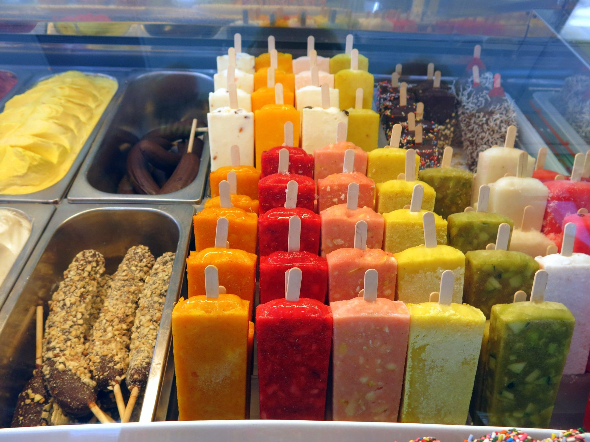
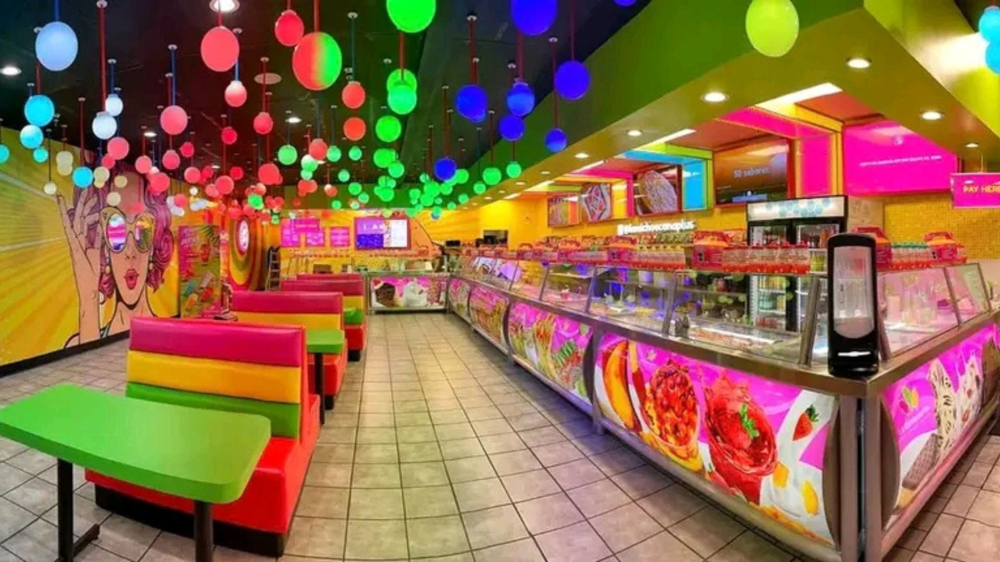

Bienvenido a la paleteria Frio Sabor, un lugar donde podras disfrutar de deliciosas paletas, helados y aguas frescas con los mmejores sabores. contamos con productos preparados con ingredientes de calidad para brindarte una experiencia refrescante y agradable en cada visita


En este video se muestra detalladamente el proceso de elaboración de paletas de manera artesanal, resaltando cada etapa desde la preparación de los ingredientes hasta el producto final listo para disfrutarse. El video inicia con la presentación de los materiales necesarios, como frutas naturales, agua, azúcar, moldes para paletas y palitos de madera, explicando la importancia de utilizar ingredientes frescos para obtener un mejor sabor y calidad. Posteriormente, se observa el lavado y selección de las frutas, las cuales se cortan en trozos pequeños para facilitar su licuado A continuación, las frutas se colocan en la licuadora junto con agua y azúcar en las proporciones adecuadas, logrando una mezcla homogénea y bien integrada. En el video se enfatiza la importancia de probar la mezcla para ajustar el nivel de dulzor según el gusto deseado. Después de obtener la mezcla, esta se vierte cuidadosamente en los moldes para paletas, evitando derrames y asegurando que todas tengan la misma cantidad. Luego, se colocan los palitos de madera en el centro de cada molde, cuidando que queden bien alineados para facilitar su consumo una vez congeladas. Finalmente, las paletas se llevan al congelador durante varias horas hasta que alcanzan la consistencia adecuada
La tabla presenta la variedad de sabores de paletas, junto con su tamaño, costo y cantidad disponible. Se observa que las paletas de fresa con coco en tamaño jumbo son las de mayor precio, con un costo de $55 y una disponibilidad de 8 piezas, lo que refleja que es un producto especial o premium. Las paletas de kiwi con piña en tamaño grande tienen un precio de $40 y una cantidad de 14 unidades, ofreciendo un equilibrio entre tamaño y costo. El sabor limón, en tamaño mediano, cuesta $35 y cuenta con 17 piezas, siendo una opción intermedia y refrescante.
| Sabores | Tamano | Costo | Cantidad |
|---|---|---|---|
| fresacoco | jumbo | $ 55 | 8 |
| kiwipina | grande | $ 40 | 14 |
| limon | mediano | $ 35 | 17 |
| treschocolates | chico | $ 25 | 23 |